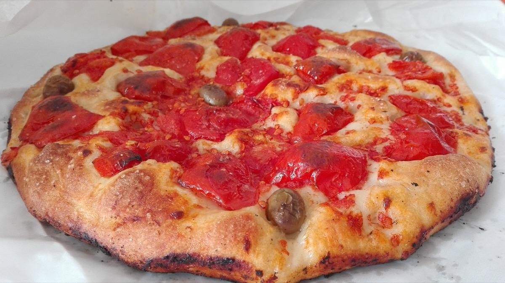
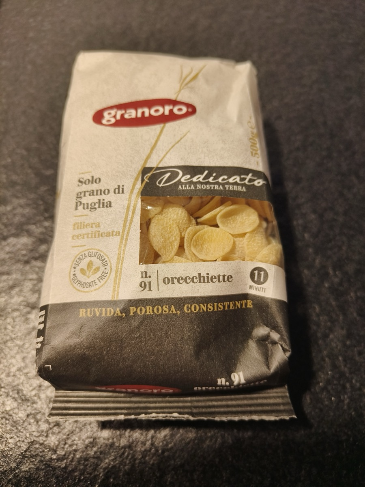
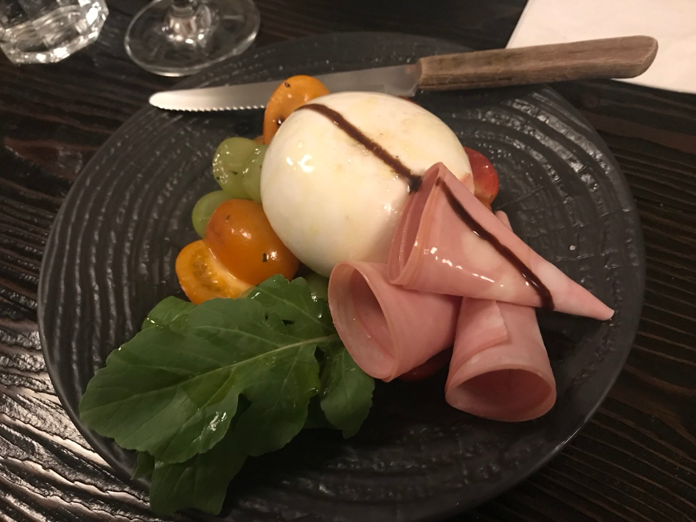
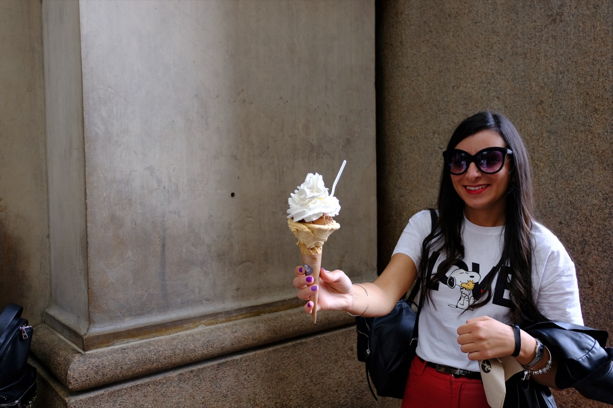

A pochi minuti a piedi da casa
Luci, musica e vita notturna
Serate di pesca e luci sull'acqua
A pochi passi dal porto antico
Cornetto, caffè e dolce vita
Il cavalluccio rosso veglia sul porto
Nel cuore dei giardini del centro storico
Ogni piastrella, posata a mano
Ogni tavola scelta con cura
Le rotaie in acciaio, il piano di sopra nasce
Soppalco · cucina equipata · bagno privato
Tutto il comfort in uno spazio ben pensato
Letto matrimoniale · divano · spazio privato

Croccante, dorata, indimenticabile

La pasta simbolo della Puglia

Il formaggio più cremoso del mondo

Dolcezza italiana ad ogni angolo